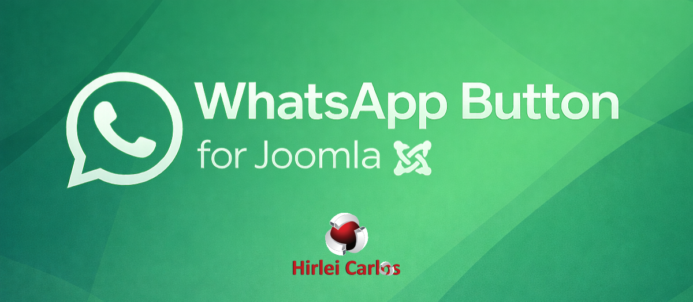
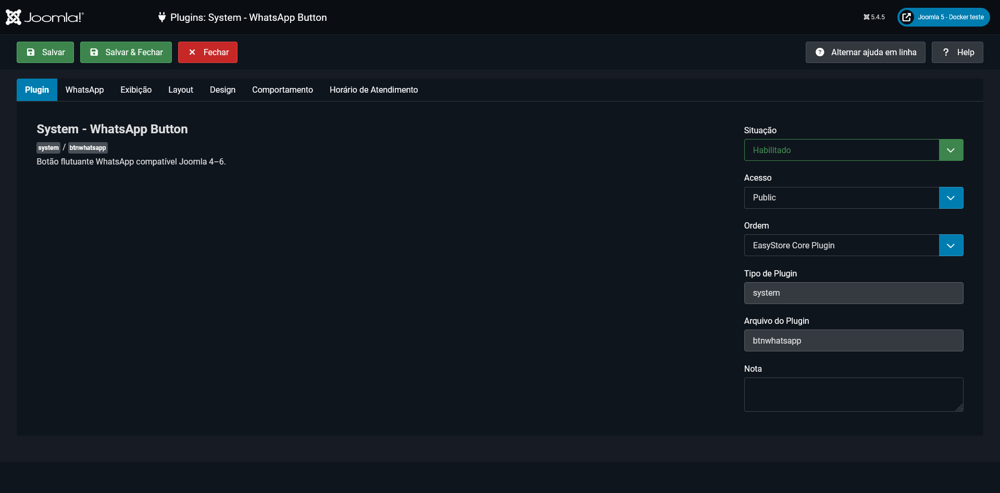
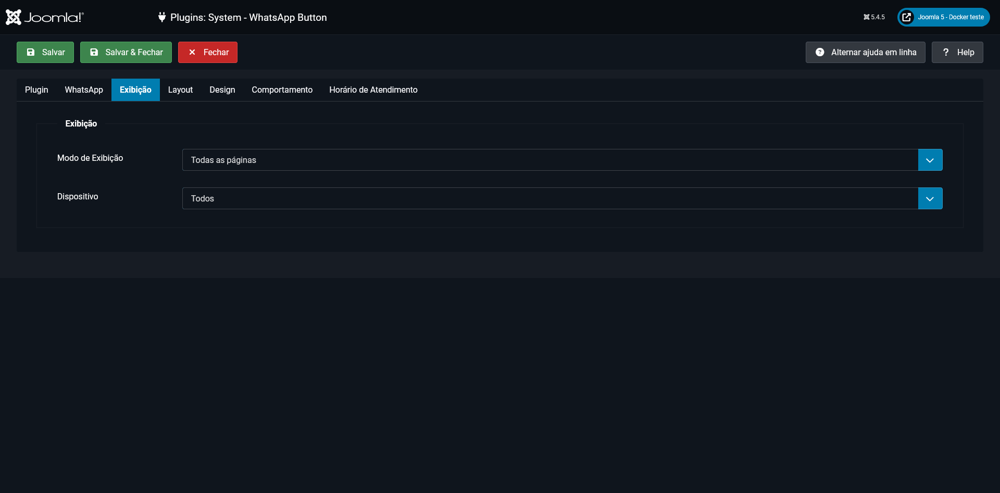
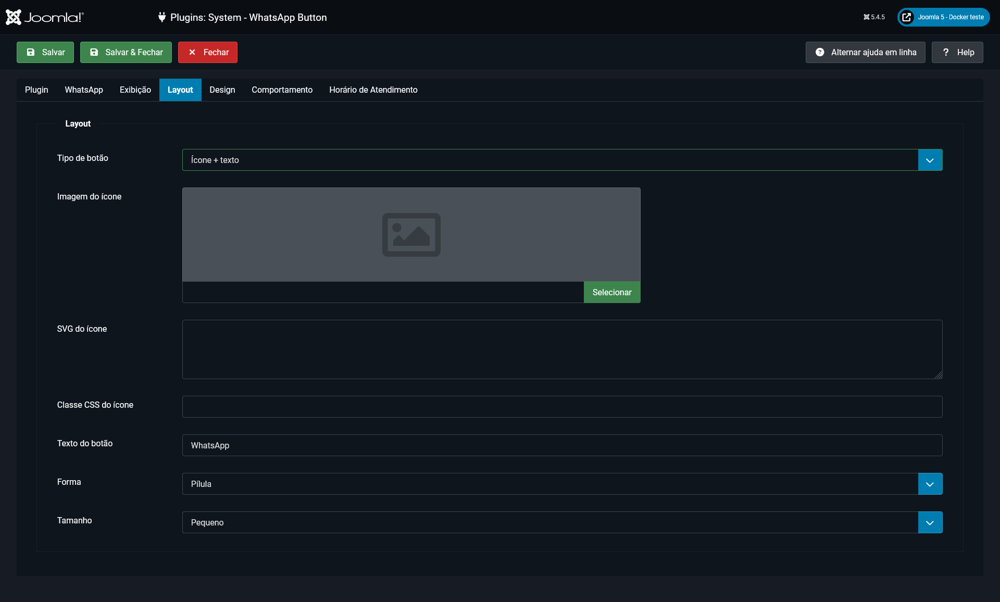
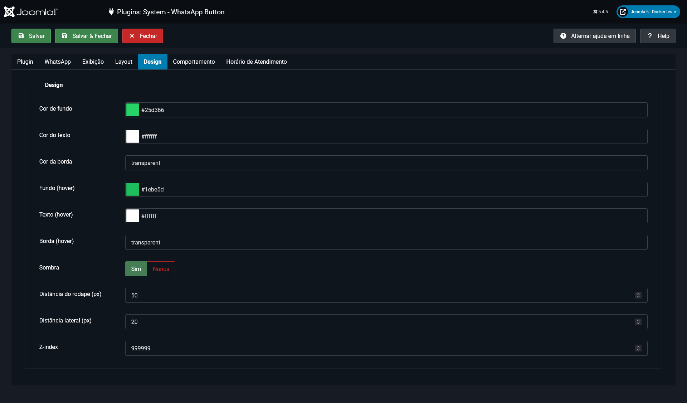
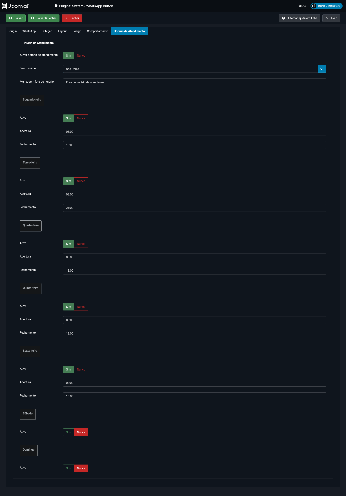
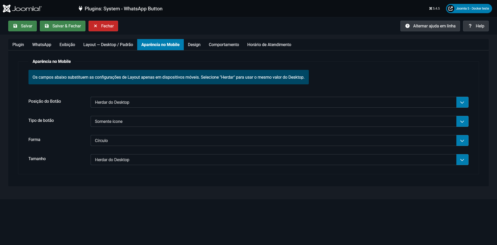

Problema
Evitar alterações no template
O botão é inserido por plugin de sistema e pode ser atualizado ou desativado sem editar arquivos da camada visual.
Plugin de sistema · Open Source · JED
Botão flutuante para Joomla sem alterar o template

Visão geral
O System - WhatsApp Button resolve uma necessidade específica: disponibilizar contato pelo WhatsApp no frontend sem inserir código manual no template. O administrador controla onde, quando e como o botão aparece, enquanto o plugin cuida da sanitização, da URL de destino, dos assets e da renderização.
Seções da página
Problema e público
Problema
O botão é inserido por plugin de sistema e pode ser atualizado ou desativado sem editar arquivos da camada visual.
Público
Projetos institucionais, lojas, serviços, portais e páginas de campanha que usam o WhatsApp como canal de contato.
Casos de uso
A mensagem aceita URL, título e nome do site, permitindo iniciar a conversa com contexto sobre a página visitada.
Recursos reais
Mensagem
Suporte a {url}, {title} e {sitename}.
Exibição
Controle para todas as páginas ou itens de menu selecionados, em desktop, mobile ou ambos.
Mobile
Posição, tipo de botão, forma e tamanho podem herdar do desktop ou usar valores específicos.
Layout
Ícone por classe CSS, SVG sanitizado, imagem do Media Manager ou ícone padrão.
Design
Cores, borda, sombra, hover, distâncias laterais e z-index controlados pelo painel.
Comportamento
Entrada slide, bounce ou fade, atraso configurável e tooltip com interação por hover e foco.
Atendimento
Horários por dia, fuso horário e mensagem específica para períodos fora do atendimento.
Acessibilidade
O CSS respeita prefers-reduced-motion e os controles respondem ao foco.
Segurança
Telefone limitado a dígitos e SVG tratado para remover scripts, eventos e protocolos inseguros.
Capturas administrativas
As capturas são da documentação local da versão 3.1.0 e mostram as áreas reais disponíveis no administrador do Joomla.






Arquitetura
Fluxo Joomla
Base técnica
Instalação
Obtenha plg_system_btnwhatsapp.zip na release.
Envie o pacote em Sistema, Instalar e Extensões.
Localize WhatsApp Button em Sistema, Gerenciar e Plugins.
Preencha o telefone, salve e refine as demais abas conforme o projeto.
Releases
v1
Primeira linha pública do botão flutuante.
v2 e v3.0
Histórico documentado no repositório e no DEV & Versos #6/2026.
v3.1
Configurações específicas para mobile sem quebrar instalações atualizadas.
Fonte: releases e tags publicados no GitHub.
Artigo relacionado

Artigo técnico dedicado
O artigo apresenta o objetivo do plugin, a estrutura moderna com namespace, service provider, layout separado, CSS dedicado e recursos de configuração pelo administrador.
Ler artigo no LinkedIn ↗Acesse o repositório, o JED, a release instalável e o HUB principal de produtos Joomla.